Fortalecemos el cuidado colectivo y las diversas formas de habitar el territorio.
Inclusión Intergeneracional: Espacios de encuentro e intercambio de saberes entre generaciones.
Diversidad Funcional: Procesos accesibles e inclusivos para la participación activa.
Personas Mayores: Reconocimiento como portadoras de memoria histórica y saberes ancestrales.
Ocupación Humana: Valoración de actividades culturales como construcción de identidad y autonomía.
Redes de Apoyo: Fortalecimiento de solidaridad y reciprocidad comunitaria.
Conectamos al Tolima con el mundo mediante la cooperación y el beneficio mutuo.
Cooperación Local: Alianzas con redes regionales para proyectos eco-sociales.
Alianzas del Sur: Vínculos con redes que comparten visión de pluriversos.
Cooperación Académica: Diálogo con universidades e institutos de investigación.
Circulación de Metodologías: Estrategias para que innovaciones locales dialoguen globalmente.
Impulsamos el cuidado y la regeneración de los sistemas vitales del territorio.
Investigación Acción Participativa: Co-creación donde comunidad y equipo técnico complementan saberes.
Gestión Integral: Acciones simultáneas de recuperación ambiental y fortalecimiento cultural.
Turismo Regenerativo: Herramienta supeditada a planes de vida locales.
Diseño Regenerativo: Principios que permiten sostenibilidad y sanación de ecosistemas.
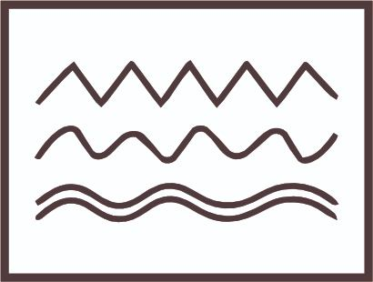
Reconocemos la cultura como el tejido vivo de saberes, prácticas y memorias que las comunidades construyen en interacción con el territorio.
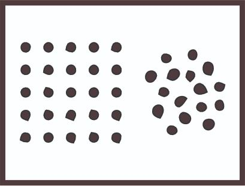
Comprendemos la diversidad como la coexistencia de múltiples formas de habitar y participar. Promovemos escenarios inclusivos donde las diferencias sean reconocidas como una riqueza colectiva.
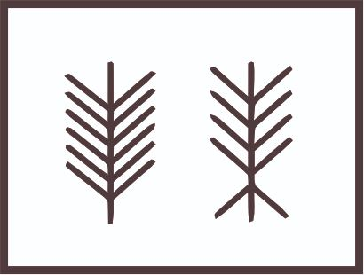
Construimos procesos horizontales basados en el diálogo de saberes y el reconocimiento de las comunidades como protagonistas de sus propias transformaciones.
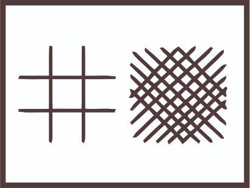
Entendemos el cuidado como una práctica colectiva que fortalece los vínculos entre personas, comunidades, animales y naturaleza.
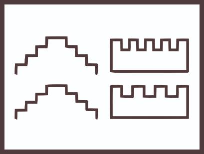
Impulsamos acciones orientadas a la regeneración de territorios y fortalecimiento de sistemas vitales mediante prácticas creativas y participativas.
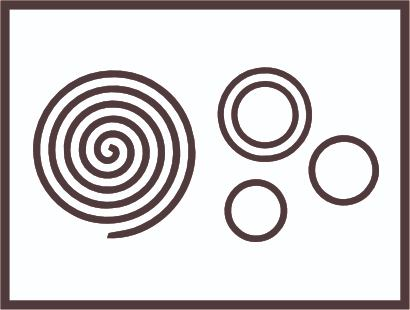
Actuamos con ética y responsabilidad. Comprendemos el aprendizaje como construcción permanente del intercambio de experiencias y diálogo de saberes.
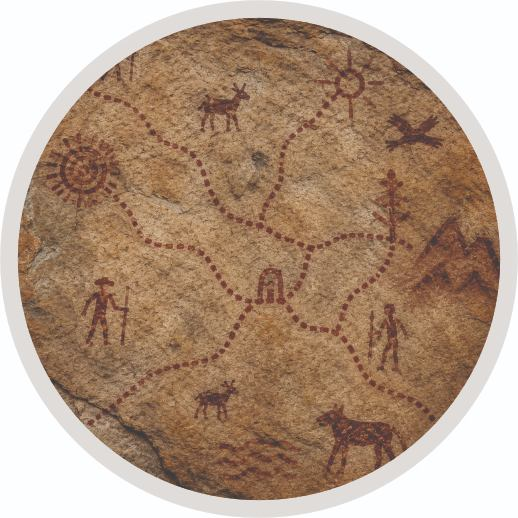
Unimos el rigor profesional con el conocimiento comunitario para proyectos con respaldo técnico y aceptación territorial.
✓ Laboratorios comunitarios de co-creación y diálogo de saberes.
✓ Espacios intergeneracionales para transmisión de saberes ancestrales
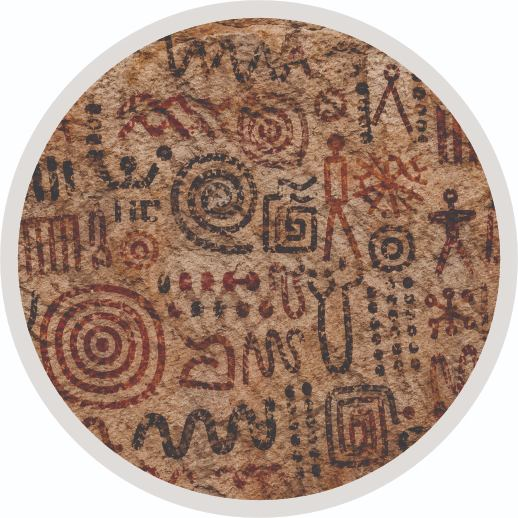
Actuamos como puente para proyectar sabidurías y metodologías creativas como aportes vitales globales.
✓ Intercambio de experiencias con organizaciones del Sur Global
✓ Actividades culturales urbanas y contemporáneas.
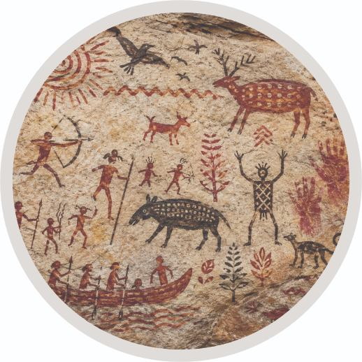
Aportamos perspectiva donde la vida, en todas sus formas, es la prioridad.
✓ Estrategias participativas para protección de sistemas vitales.
✓ Formación en prácticas de cuidado y regeneración social y ambiental
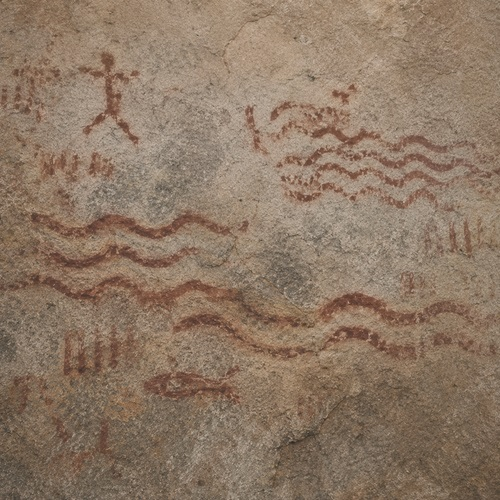
Nuestras propuestas buscan sanar el tejido social y ambiental con resultados permanentes.
✓ Talleres comunitarios de inclusión social, diversidad funcional y participación cultural.
✓ Procesos intergeneracionales de memoria histórica e identidad cultural
✓ Actividades ocupacionales, artísticas y culturales para fortalecimiento social
✓ Estrategias de accesibilidad e inclusión para proyectos culturales
✓ Formación en cuidado comunitario y participación social
✓ Acompañamiento comunitario para personas mayores y comunidades diversas
✓ Talleres de bienestar colectivo y construcción de redes de apoyo
✓ Diseño de metodologías participativas para proyectos socioculturales
✓ Recuperación y fortalecimiento de memoria histórica territorial
✓ Reconocimiento y preservación del patrimonio cultural del Tolima
Somos una organización con sede principal en el Tolima dedicada a la protección y fortalecimiento de los vínculos culturales, sociales, ecológicos y comunitarios del territorio. Entendemos la cultura como un tejido vivo de saberes, prácticas, memorias, expresiones tradicionales y contemporáneas, formas de cuidado y ocupaciones cotidianas construidas por las comunidades en relación con la naturaleza y su entorno.
Nuestro trabajo se basa en la co-creación, promoviendo el diálogo entre el conocimiento técnico-científico, los saberes locales y ancestrales, para construir alternativas colectivas frente a los desafíos sociales, culturales y ambientales. Reconocemos el valor de las expresiones culturales rurales, urbanas y contemporáneas como manifestaciones vivas de identidad, participación y transformación territorial.
Fundada en 1996, la Corporación Cultura y Desarrollo impulsa procesos socioculturales orientados al fortalecimiento comunitario, la inclusión, la participación social, el cuidado colectivo y el Buen Vivir, reconociendo la diversidad humana, la memoria histórica, el patrimonio cultural, los sistemas vitales y las distintas maneras de habitar y cuidar el territorio como pilares para construir territorios más justos, sostenibles y solidarios.
Entendemos el territorio como una construcción viva, social, cultural, espiritual y ecológica, donde los seres humanos y no humanos conformamos una red interdependiente de relaciones. El territorio no se limita al espacio físico, sino que incluye las formas de habitar, cuidar, participar, crear, producir, cultivar, compartir y construir vida en comunidad. Reconocemos la cultura como el tejido de saberes, prácticas, memorias, patrimonios culturales, símbolos y ocupaciones cotidianas mediante las cuales las comunidades generan identidad, bienestar colectivo y vínculos de reciprocidad con su entorno.
Comprendemos el territorio desde dimensiones interconectadas:
● una dimensión física, relacionada con los ecosistemas, sistemas naturales y formas sostenibles de producción y cuidado de la vida;
● una dimensión cultural y simbólica, constituida por las historias, memorias históricas, conocimientos ancestrales, expresiones patrimoniales, manifestaciones culturales contemporáneas y formas de significar el mundo;
● y una dimensión social y comunitaria, conformada por las relaciones de cuidado, colaboración, participación y convivencia que fortalecen el tejido colectivo.
Desde esta perspectiva, entendemos los sistemas vitales como las redes dinámicas de relaciones que permiten la sostenibilidad y regeneración de la vida en todas sus formas. No concebimos la naturaleza como un recurso externo, sino como un tejido vivo del que hacemos parte. Reconocemos la importancia del cuidado de la tierra, las semillas, los animales, el agua y las prácticas de producción responsables y respetuosas con los ciclos naturales, promoviendo formas de relación equilibradas entre comunidad, territorio y vida.
Por ello, nuestras acciones promueven la regeneración territorial mediante el fortalecimiento de los vínculos culturales, sociales, ambientales y comunitarios, favoreciendo prácticas de cuidado colectivo, inclusión, participación social, sostenibilidad y Buen Vivir.
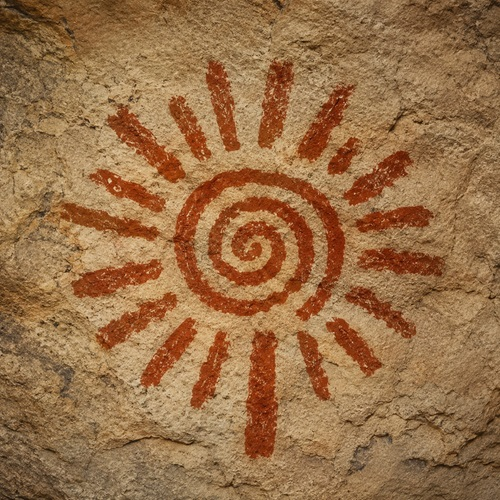
Impulsamos procesos socioculturales orientados al fortalecimiento del tejido comunitario, la inclusión, la participación social y el cuidado colectivo, mediante la articulación entre saberes territoriales, conocimientos ancestrales, prácticas culturales y conocimiento técnico-comunitario.
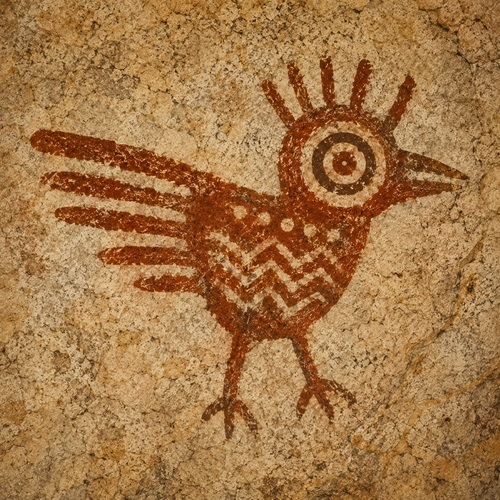
Seremos un referente regional en la construcción de alternativas socioculturales orientadas al Buen Vivir, la regeneración territorial y el fortalecimiento de los pluriversos, promoviendo la cultura, la memoria histórica y el diálogo de saberes como ejes para la transformación social.
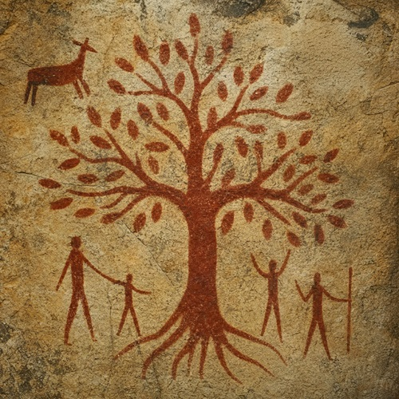
Nos identificamos con propuestas que cuestionan las nociones tradicionales de desarrollo y reconocen que la Naturaleza posee valores propios e intrínsecos. Comprendemos el territorio como un tejido vivo donde el bienestar colectivo depende del equilibrio y la reciprocidad entre todos los seres.
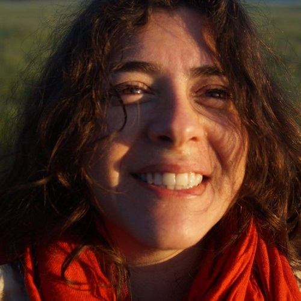
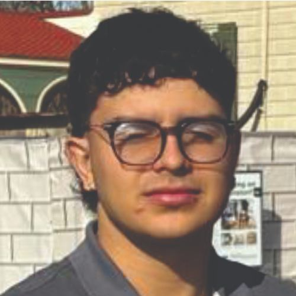